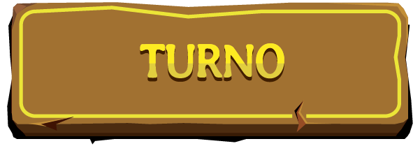
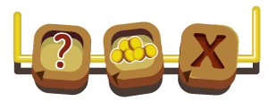
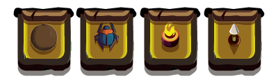
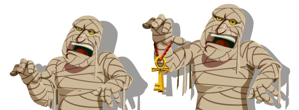
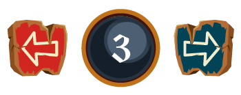
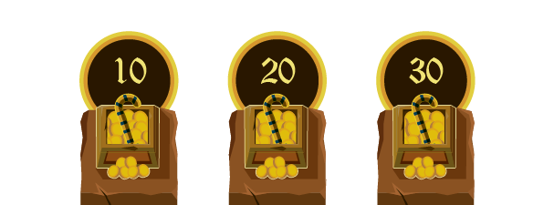

Estás por reiniciar el App.
¿Estás seguro?
Al hacer clic en jugar, entrarás en el modo pantalla completa, pero no te preocupes, puedes salir y volver a entrar en ese modo usando este boton:
... ubicado en la parte superior izquierda de la pantalla y que siempre estará disponible
Jugar
1
App del juego
Botón turno

Barra de menu

Trampas

Momia

Movimientos de la momia

Tesoros requeridos

2
Cómo jugar y ganar
El ganador del juego es la primera persona en cruzar la puerta que los jugadores escojan como fin del juego. Dependiendo de la ubicación y cantidad de llaves en el tablero, que serán colocadas allí por el jugador 1 y de la puerta escogida como fin del juego, la partida puede ser más corta o más larga.
Pueden jugar una partida en donde la puerta final es la que está en la zona exterior del tablero y exigir una llave para pasar de una zona a otra; también pueden escoger la puerta intermedia como final y pedir 1 llave para atravesar la puerta inicial y 2 para la puerta intermadia. Sin importar el tipo de partida, el ganador es quien primero logre cruzar la puerta escogida.
3
Preparación del juego
Antes de iniciar la partida deben organizar en grupos las 8 tarjetas llave, los 5 token de llave, las 5 fichas de momia, las 4 fichas de jugador, las 50 Tarjetas Tesoro y las 40 Tarjetas Reliquia. Los grupos deben ponerse fuera del tablero antes de iniciar la partida.
Luego de preparar el juego se asignarán los turnos así:
Hay ciertas reglas que se deben tener en cuenta para ubicar los token de llave y las fichas de momia, para conocerlas puedes dirigirte a la sección Casillas > Casillas llave y a la sección Momias respectivamente.
Recuerda que la partida puede hacerse más larga o más corta según los elementos que se incluyan en el juego, por eso todos los jugadores deben estar de acuerdo sobre qué tan extensa será la partida.
4
Turnos
Antes de empezar el juego todos los jugadores tendrán sus fichas fuera del tablero y jugarán cada turno así:
Jugando el primer turno de cada jugador
Todos los jugadores en su primer turno deben ubicar su ficha en el centro del tablero y tomar inmediatamente dos Tarjetas Tesoro, luego el jugador en turno seguirá los pasos siguientes y así terminará su turno.
Recuerda que no puedes pasar dos veces por la misma casilla durante el mismo turno, tampoco podrás terminar tu movimiento en una casilla ocupada por otro jugador aunque sea la casilla donde están los token de llave o las casillas puerta. Si al final de tu movimiento estás en una casilla de activación podrás usar en ese momento una tarjeta reliquia de ese tipo y luego terminará tu turno.
5
Tablero
El tablero está dividido en tres zonas (central, intermedia y exterior) que están demarcadas por muros gruesos e identificadas por colores.
Pasando de Zona
Para pasar de una zona a la siguiente, los jugadores deben recoger la llave o las llaves que abren la puerta a la siguiente zona además de reunir las Tarjetas Tesoro con los Myts* que deben ser entregados como pago para abrir las puertas. La cantidad de Myts que se necesita para pasar de una zona a otra aparece en la pantalla del jugador 1 y él es el encargado de informarlo a los demás jugadores.
Para abrir la puerta el jugador debe pararse sobre una de las casillas puerta, entregar las Tarjetas Tesoro por el valor que se requiere y entregar la llave o llaves de la zona. El jugador que llega a una puerta para abrirla, debe esperar hasta su próximo turno para seguir moviéndose. Las casillas puerta son casillas seguras en donde ningún ataque tiene efecto.
Si el jugador tiene más tesoros de los que necesita para seguir avanzando, podrá guardarlos. Las tarjetas usadas siempre se colocan debajo de las demás de su mismo grupo.
----------------
*Valor indicado con un número en cada Tarjeta Tesoro.
----------------
Los jugadores que no logren llegar a la puerta final de la partida, suman los Myts de sus Tarjetas Tesoro, reciben 5 Myts si lograron llegar a la zona elegida como fin del juego, reciben 5 Myts por cada Tarjeta Reliquia que tengan y 10 Myts más por cada llave. Al sumar los Myts sabrán quien es el segundo, tercero y cuarto lugar del juego.
6
Casillas
El tablero es una gran pirámide llena de trampas, tesoros y reliquias. Los jugadores se encontrarán en su camino con las siguientes casillas:
Casillas de acción
Casillas doble tesoro
El jugador toma dos Tarjetas Tesoro si así lo quiere, no es obligatorio hacerlo.
Casillas tesoro
El jugador toma una Tarjeta Tesoro si así lo quiere, no es obligatorio hacerlo.
Casilla reliquia
El jugador toma una Tarjeta Reliquia si así lo quiere, no es obligatorio hacerlo.
Casilla de activación
El jugador puede usar las Tarjetas Reliquia marcadas con el símbolo de activación al llegar a esta casilla al final de su movimiento.
Casillas seguras
En estas casillas el jugador no es afectado por las momias, las trampas o las tarjetas usadas por otros jugadores.
Casilla momia
Las momias van a estas casillas cuando una Tarjeta Reliquia lo indique.
Casilla llave
Son las casillas en donde están los token de llave, el jugador en esa casilla recibe una Tarjeta Llave para abrir la puerta de la zona en la que está. La casilla donde está el token de llave pasa a ser solamente una casilla de llave, así que si había un tesoro, reliquia, etc. ya no estará allí. El token de llave no se puede ubicar sobre agujeros, rampas, mazmorras, casillas momia o frente a las casillas pasaje.
Casilla pasaje
Sirven para pasar rápidamente de un lugar del tablero a otro pero se debe ver con atención los símbolos en la entrada a estas casillas porque muestran si son entradas o salidas. El color de los simbolos indica por cúal de ellas se debe salir luego de usarlas. Esta también se considera una casilla segura. Sin importar si el jugador aún tiene casillas por mover en su turno, si usa un pasaje el turno termina en el pasaje de salida que corresponda.
Casilla Puerta
El jugador debe ubicarse sobre la casilla marcada de color amarillo para pasar de una zona a otra entregando la llave o las llaves y los tesoros requeridos. El turno de un jugador termina al llegar a esta casilla y podrá seguir avanzando en la siguiente ronda.
Casillas Trampa
Son casillas que pueden afectar negativamente a los jugadores, el App se encarga de activar estas casillas durante el turno de cada jugador, sin embargo, las casillas solo se activan en la zona en donde está el jugador en turno. Las casillas trampa en el juego son:
Casilla mazmorra
Allí van los jugadores cuando una momia los atrapa o cuando una Tarjeta Reliquia lo indique. Cada jugador debe ocupar su propia mazmorra marcada con su número de jugador a menos que se indique otra cosa.
Casillas roca
Las rocas afectan todas las casillas frente a ellas hasta llegar a un agujero. Si una piedra alcanza a un jugador, el jugador perderá su tarjeta de tesoro más valiosa y una tarjeta de reliquia al azar escogida por otro jugador.
Casilla estacas
Las estacas afectan solamente la casilla en donde se encuentran. El jugador afectado por las estacas pierde un tesoro al azar elegido por otro jugador.
Casilla escarabajo
Los escarabajos se mueven adelante, atrás y a los lados pero solo una casilla de distancia desde donde se encuentran. Si un jugador se encuentra con estos insectos solo podrá moverse 3 casillas en su próximo turno pero si el jugador es afectado más de 1 vez antes de que sea su turno de moverse, podrá moverse solo 1 casilla.
Casilla pilar de fuego
Siempre se encuentra en el centro de cuatro casillas las cuales alcanza con sus llamas. El jugador que es alcanzado por estas llamas pierde dos Tarjetas Reliquia al azar que serán escogidas por otro jugador.
Casilla agujero
Es un agujero en el suelo que no se puede saltar sin la reliquia apropiada.
Casilla rampa
El jugador solo puede moverse sobre estas casillas en la dirección que ellas indican a menos que el jugador posea la reliquia apropiada.
Recuerda que al pasar sobre las casillas rampa no descuentas casillas de tus movimientos.
7
Momias
Las momias son las que cuidan los tesoros y reliquias guardados en la pirámide, por eso su misión es atrapar a cualquier intruso y enviarlo a las mazmorras de cada zona.
Casillas no permitidas
Las momias no pueden ubicarse al inicio del juego en las siguientes casillas: Casillas Rampa, Casillas Agujero, Casillas Puerta, Mazmorras y Casillas Llave.
Movimientos de las momias
Las momias pueden girar y caminar como los demás jugadores siendo controladas por el App. Al igual que las trampas, las momias solo se mueven en la zona en donde está el jugador en turno.
Las momias no pueden cruzar los muros que dividen las zonas pero si pueden cruzar los muros delgados de su zona usando un artefacto llamado Llave Mística. Si una momia va a usar una llave durante su movimiento, el App se encarga de informarlo.
Las momias pueden circular libremente por el tablero pasando por encima de rampas y agujeros aunque al hacerlo si descuentan casillas de sus movimientos. Si el último paso deja a la momia en una casilla no permitida se debe mover a una casilla habilitada junto a la no permitida y será el jugador en turno quien escoja cual casilla será.
La momia bloquea el camino en donde se ubica, un jugador solo puede pasar por encima de ella con la reliquia adecuada. Si al final de su turno una momia va a ocupar una casilla donde hay otra momia, la momia que estaba inicialmente en la casilla debe ir a una casilla momia. Si hay un jugador en la casilla final del movimiento, el jugador va a su mazmorra.
La momia nunca podrá quedar en una casilla rodeada por completo por muros gruesos o de zona que le impidan seguir desplazandose. Si su movimiento va a terminar en una casilla sí, se debe dejar a la momia en la casilla anterior.
Atrapado por la momia
Las momias atrapan a los jugadores que pueden ver frente a ellas y los envían a su mazmorra. Si hay un jugador frente a otro, solo el que está justo frente a la momia irá a la mazmorra en ese turno, pero si en el siguiente turno, la momia sigue viendo al otro jugador, él también irá a su mazmorra.
8
Tarjetas
Existen dos tipos de tarjetas en el juego. Siempre se deben tomar de la parte superior de su grupo y después de usarlas se deben poner de vuelta debajo.
Tarjetas Tesoro
Son necesarias para abrir las puertas en cada nivel del tablero sumando el número total de Myts obtenidos. Cada jugador puede tener un máximo de 8 de ellas a la vez. Para cambiar una de ellas debe renunciar a una de su mano y luego tomar una del grupo de Tarjetas Tesoro.
Tarjetas Reliquia
Dan ventajas durante la partida, obtenerlas es muy importante. Cada jugador puede tener un máximo de 4 de ellas a la vez. Para cambiar una de ellas debe renunciar a una de su mano y luego tomar una del grupo de Tarjetas Reliquia.
Los jugadores que no logren llegar a la puerta final de la partida, suman los Myts de sus Tarjetas Tesoro, reciben 5 Myts si lograron llegar a la zona elegida como fin del juego, reciben 5 Myts por cada Tarjeta Reliquia que tengan y 10 Myts más por cada llave. Al sumar los Myts sabrán quien es el segundo, tercero y cuarto lugar del juego.